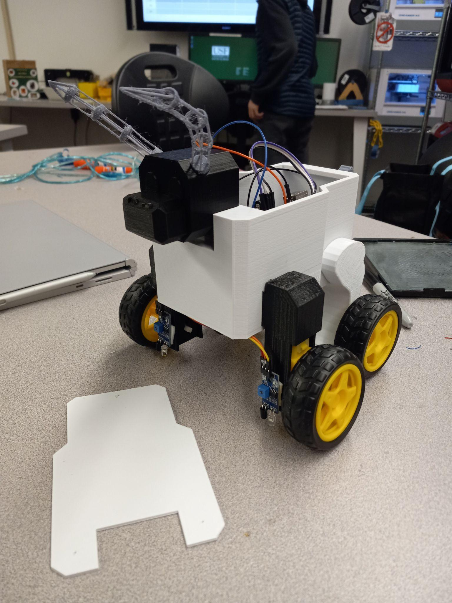
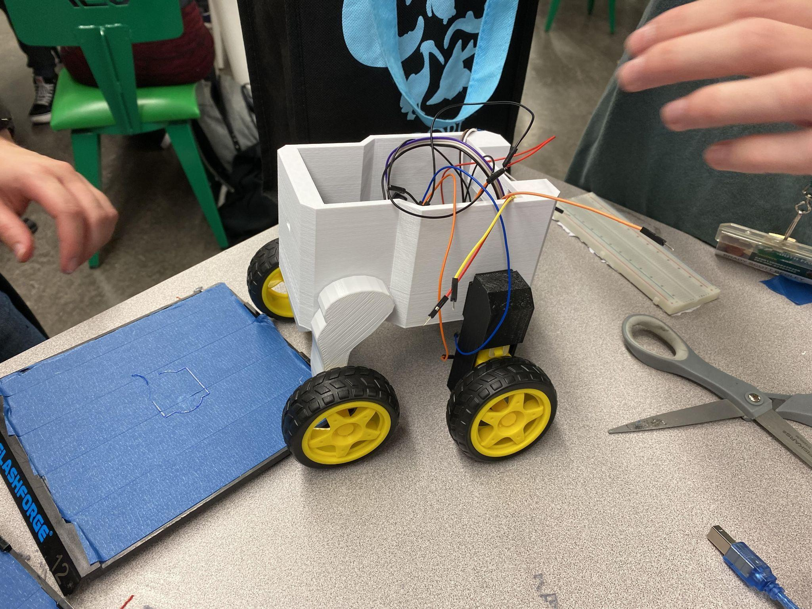
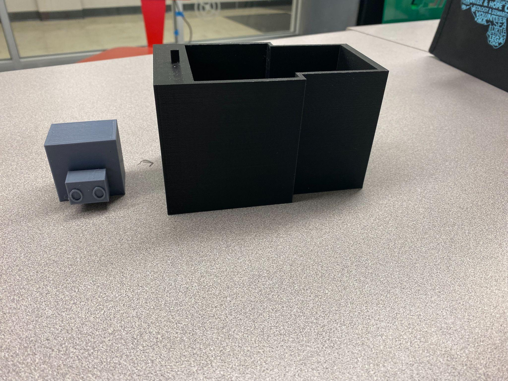
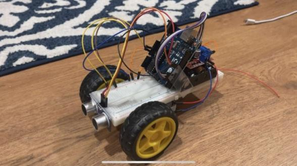

02Rocky
Mechatronics · Integration · V&V
Rocky
the Bull
A $30 remote-controlled educational robot designed around a three-minute assembly constraint—not just a final object, but a sequence of build, test, failure, and revision decisions.
- $30Build budget
- 3 minAssembly target
- 355Weighted evaluation score
- LeadVerification & validation

Build chronology
Each image marks a decision.



Failure mode
Obstacle detection
Ultrasonic behavior was tested across approach conditions; results drove sensor placement and component-layout revisions.
Failure mode
Impact resistance
A failure-mode-based matrix turned “durable” into observable checks instead of a visual claim.
Integration lesson
The interfaces are the design
Enclosure, wiring, motors, sensors, cost, and assembly time could not be optimized independently.